DAY 8: Hoso-ura Station (細浦駅) > Goishikaiganguchi Station (碁石海岸口駅)
SITES: Anatoshi-Iso (穴通磯), Ohama Beach (大浜), Goishi Cape and Information Centre (碁石岬). Side trip to Kesennuma City Memorial Museum (気仙沼市東日本大震災遺構・伝承館)
Stay: Hotel Isomura in Kesennuma
The Goishi Coast: probably one of my favourite sections for this entire trip. Much of that is probably because of the sun.
You get the best confluence of colours here. Hues of aqua, blue and green from the water, sky and trees. And then there's the warmer colours of orange, brown and yellow from the dried out trees and leaves. Contrast it against unique geological shapes and you get Goishi Coast. On a cool, and sunny day, it is stunning. Here are some pictures from the morning section of the hike.
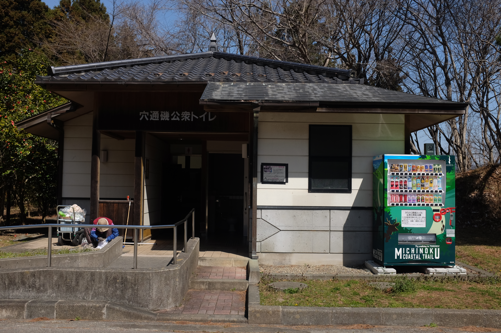 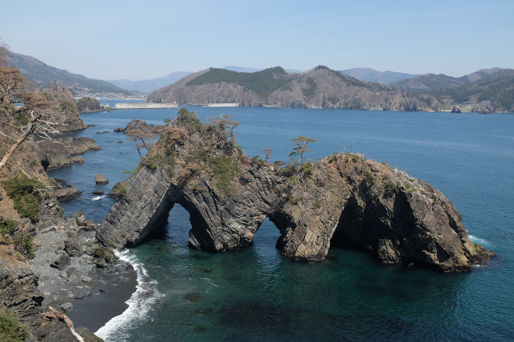 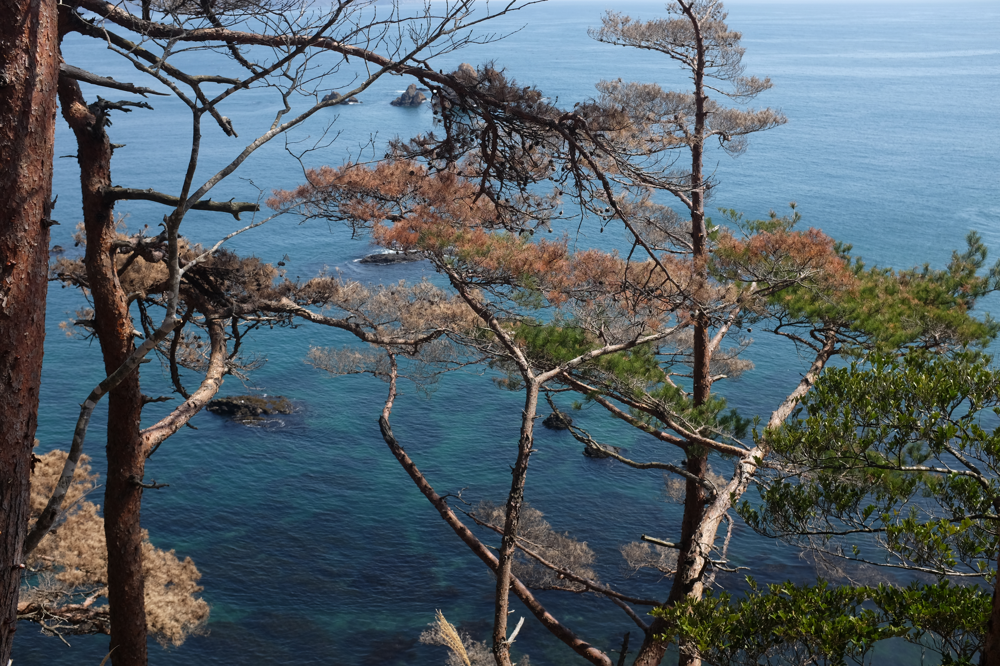 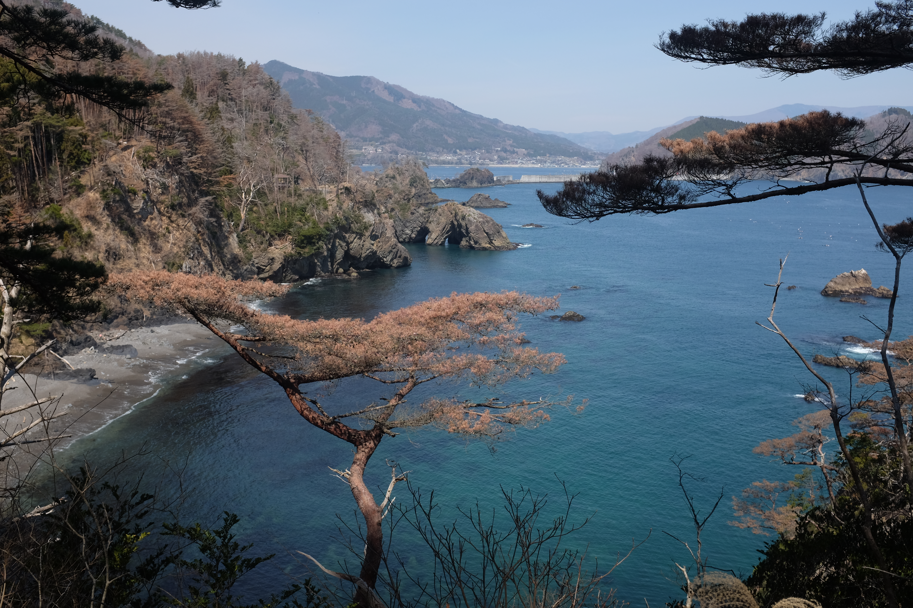
The trail continues along, and there continues to be good views of rocky beaches throughout. There are several of them you can enter and relax for the day (one such one is Ohama, which just means "big beach"). The road winds along and ends at the visitor centre, where you can see the "thundersound" rock -- apparently, one of the preserved 100 soundscapes in Japan.
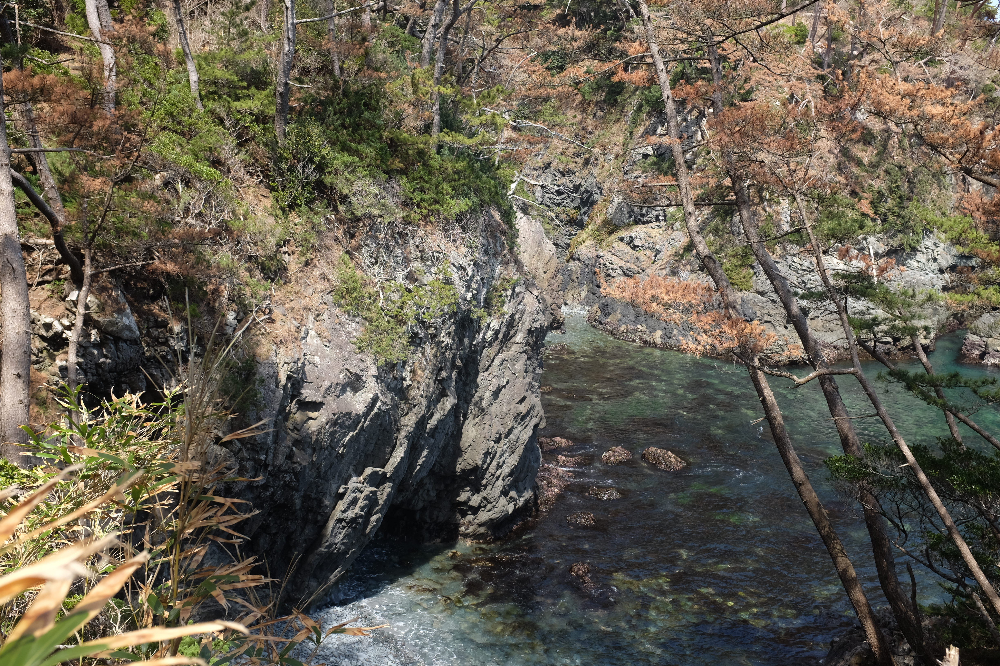
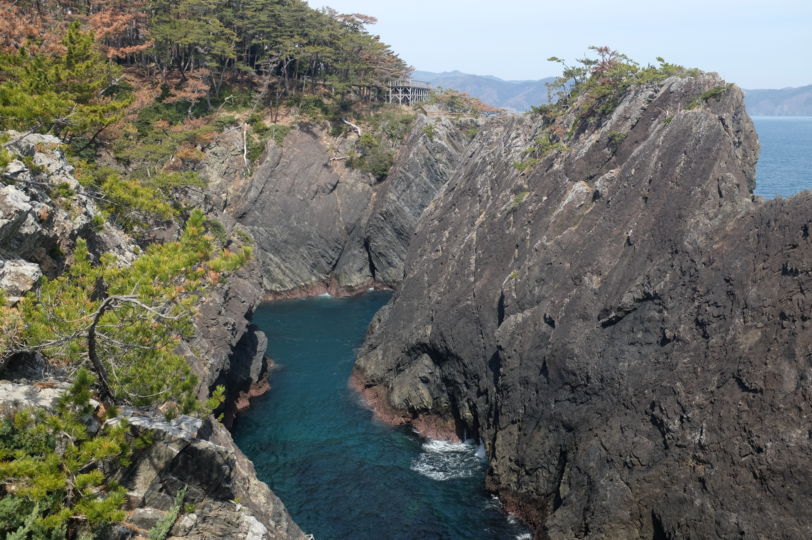
When the coastal trail ends, you end up back in the small village. We decide to head back to Kesennuma earlier to visit the Memorial Museum for the tsunami.
--
There are physical signs that remind the traveller about the 2011 tsunami. At the descent of a mountain pass, on the car road, one often sees a hanging sign that says either "tsunami inundation line starts here" or "...ends here". It serves the twofold purpose of commemorating how high the water was on March 11th, and also as a barometer for height of evacuation. Another common sign is a placard on the side of the building indicating how high the tsunami made it. There is usually the date, and the height listed (side note: Kesennuma has a sea squirt motif they put on everything, including this sign).
Each time my friend and I see these, we cock our heads back to look up, and crank our heads sideways to imagine what the ground we are walking on would look like flooded. It's a hard thing to do -- imagine a disaster -- and the Kesennuma City Memorial Museum helped illustrate that for us.
The Museum sits at the site of Koyo High School. It was a building destroyed by the tsunami, but preserved to be in as-original-state as possible following March 11, 2011. Here, the physical signs of the tsunami's damage are even stronger. Rooms still in a mess; warped whiteboards; littered books with curled spines.
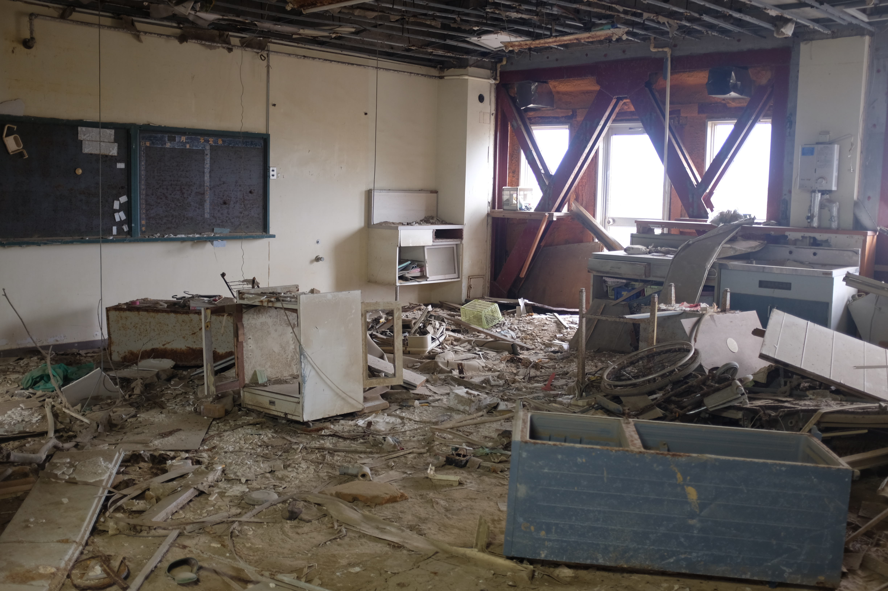 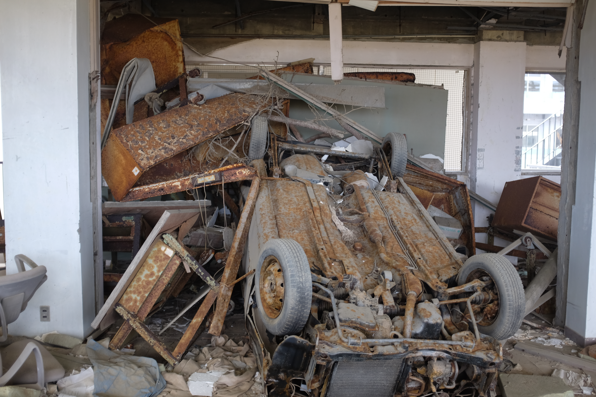
And when one walks out to the courtyard, what looks like an modern art installation of debris greets the tourist.
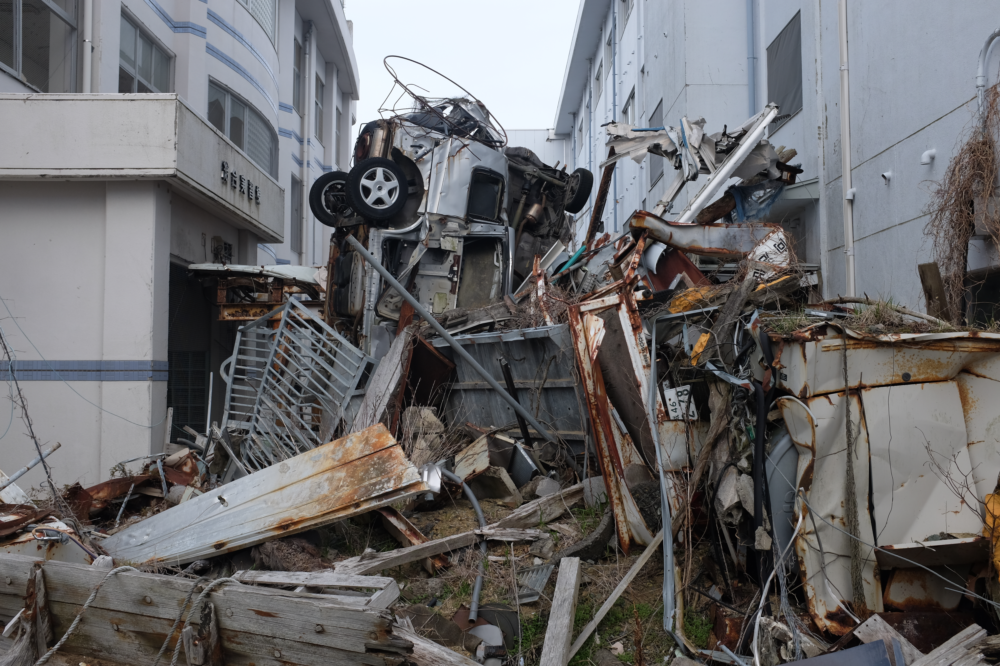
The most poignant part of the exhibit were the videos. The first video you watch is raw footage from all along the Tohoku Coast of the tsunami flooding the town. Not much is said here but simple, descriptive narration. The viewer can imagine the rest of the details themselves. The final video room -- after touring the entire building -- has footage of the survivors reliving the day through various experiences. One we watched was about a family of four that split into two when the mom and son survived, but father and daughter didn't. The most heart-wrenching one was the 18 year-old valedictorian of a nearby high school giving his graduation speech 10 days after event. The graduation was supposed to be the day of the earthquake. The camera holds on his face for almost 3 straight minutes as you see the young man look back in desperation, cry in the present, and remain hopeful for the future. I wonder where he is now...
The most strange thing? A mini golf course right outside the museum. Some senior citizens are putting, and we can hear the hollow sound of a golf ball being struck. It's a familiar sight out here in Tohoku -- a rural, ageing population: old people passing the time together. They didn't bother redeveloping this part of town at the risk it would wash away again, and instead they repurposed the space for a leisurely activity. Maybe not strange, but an interesting (and probably deliberate) choice.
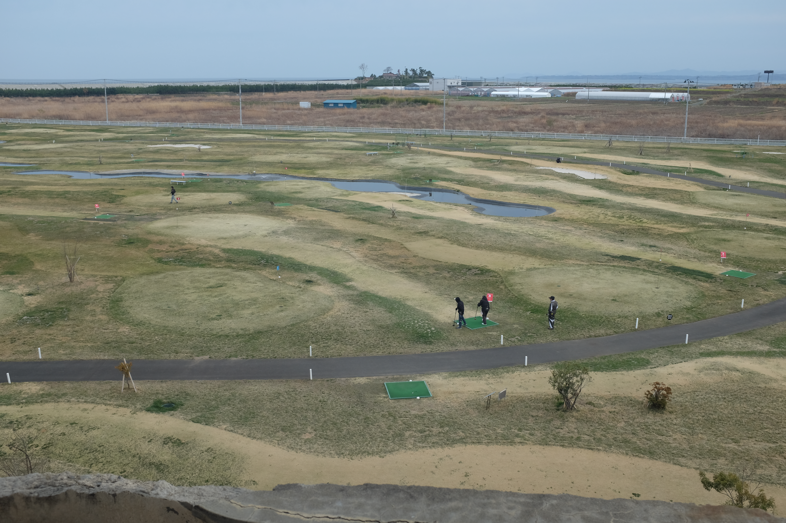
I had a lot of mixed emotions at the Museum. It's heavy when the physical memories of natural disaster make my imagination more concrete. Hundreds of lives passed through this now derelict school; a place of liveliness becomes a quiet and sombre museum with putt putt. And thousands of lives have been touched by this disaster...
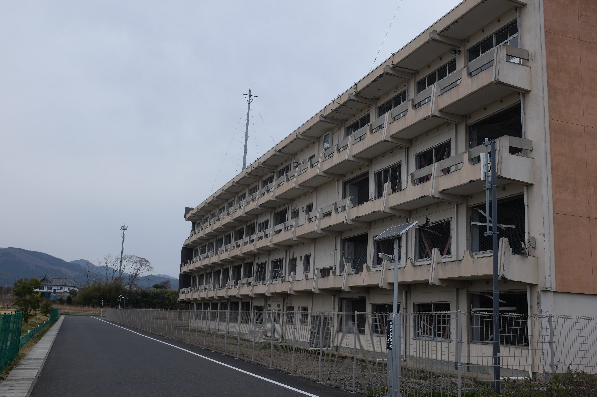